Jejak Digital: Kenapa Harus Dijaga?
Kamu tidak hanya membaca, tetapi menemukan sendiri jawabannya lewat kasus, kuis, dan game kecil.
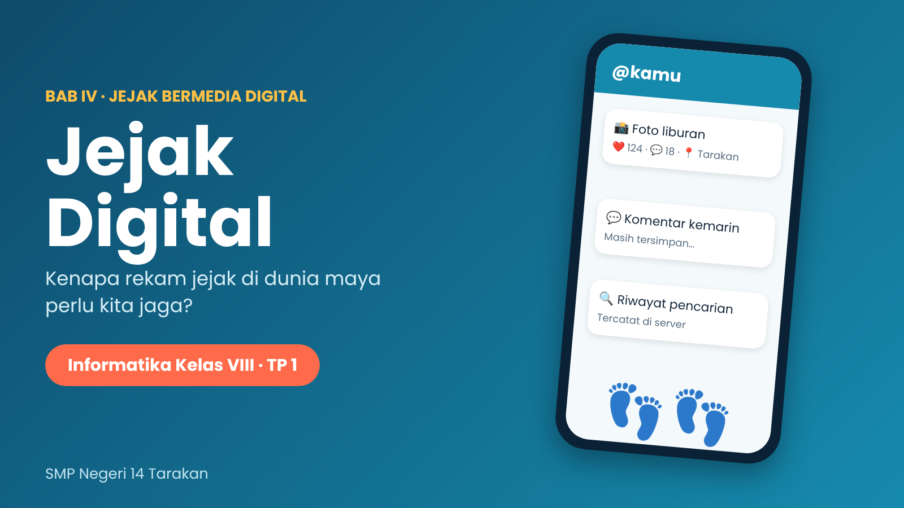
1. Pemanasan: Pernah Nggak Sih…?
Coba jawab dalam hati ya:
- Pernah menghapus postingan karena malu? Menurutmu, apakah postingan itu benar-benar hilang?
- Pernah mengetik namamu sendiri di Google? Apa yang muncul?
- Kenapa iklan di HP kadang pas banget dengan barang yang baru kamu cari?
Semua itu berhubungan dengan satu hal: jejak digital. Yuk, kita temukan jawabannya!
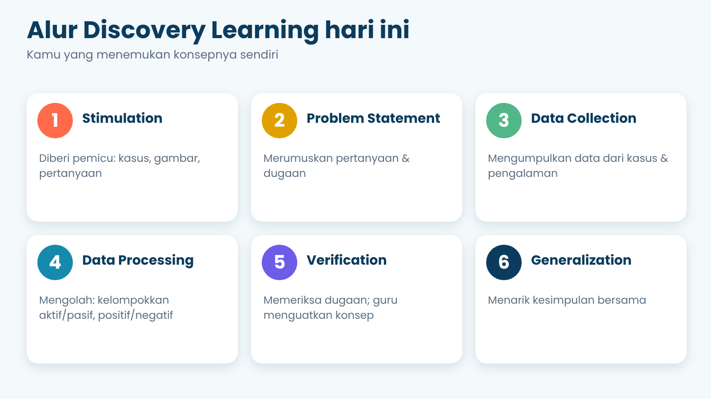
2. Studi Kasus: Dua Siswa, Dua Jejak
Baca cerita fiktif ini, lalu simpan dugaanmu.
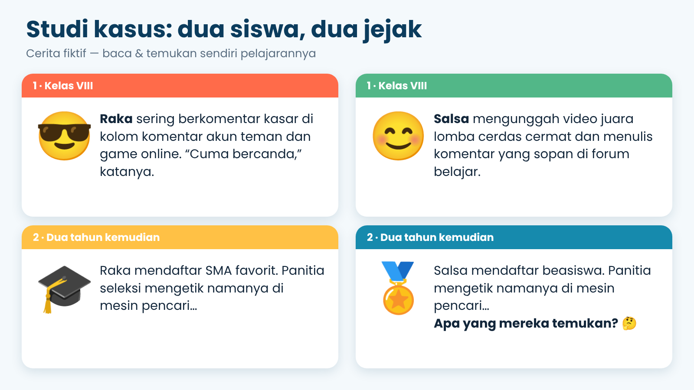
Kalau kamu jadi panitia seleksi, apa yang kamu temukan saat mengetik nama Raka? Nama Salsa? Siapa yang lebih dipercaya? Kenapa?
3. Apa Itu Jejak Digital?
Jejak digital adalah jejak data yang tertinggal ketika kita memakai internet. Semua aktivitas dan informasi yang kita tinggalkan secara online termasuk jejak digital, disadari maupun tidak.
Contohnya: memposting di media sosial, menulis komentar, membuat status WhatsApp, riwayat pencarian, mengirim pesan atau email, dan belanja online.
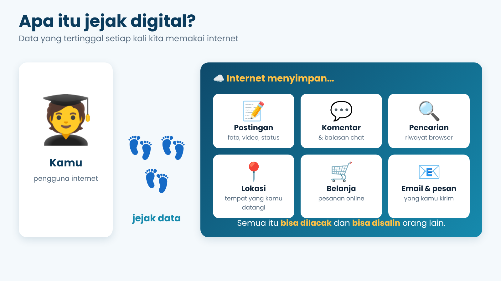
Jejak digital bisa dipakai untuk melacak aktivitas maupun perangkat seseorang di internet. Itu sebabnya kita harus ekstra hati-hati.
4. Dua Jenis Jejak Digital
| Jejak AKTIF ✋ | Jejak PASIF 🕵️ | |
|---|---|---|
| Artinya | Kamu sengaja membagikan data | Data tercatat tanpa kamu sadari |
| Contoh | Posting foto/video, komentar, status WA, isi formulir online | Riwayat pencarian, lokasi GPS, alamat IP, cookies, video yang ditonton |
| Gampang diingat | “Aku yang kasih” | “Sistem yang catat” |
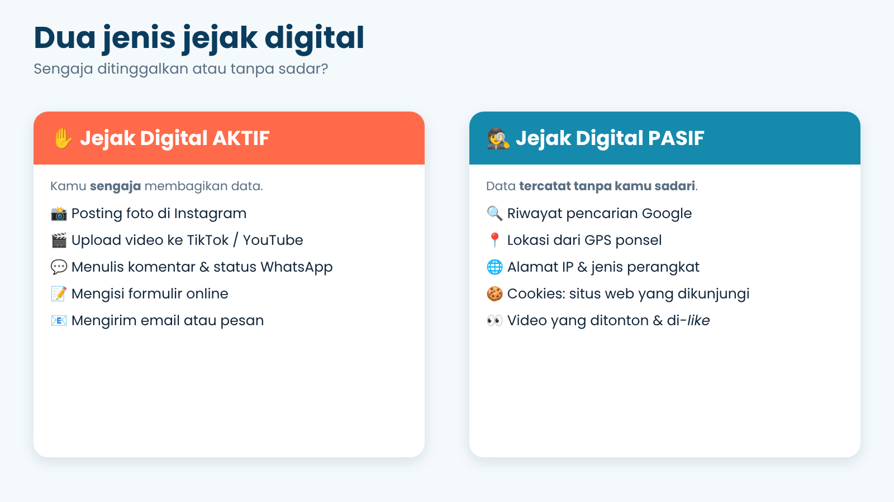
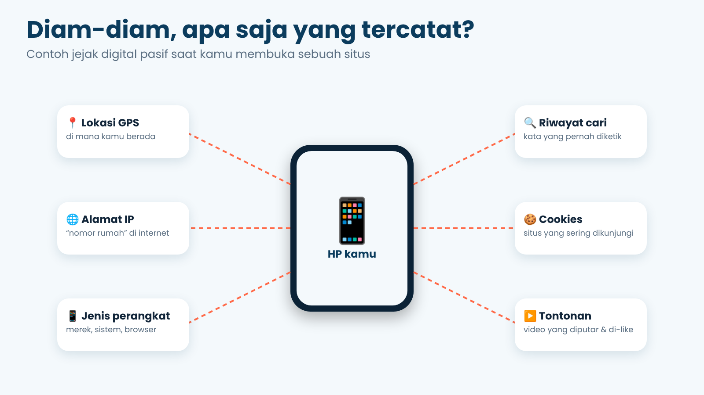
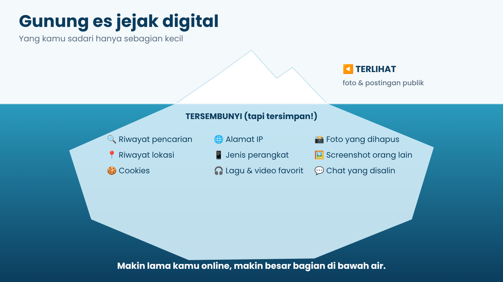
5. Sekali Unggah, Sulit Ditarik Kembali
Bayangkan kamu mengunggah satu foto. Dalam hitungan detik, temanmu bisa melihat, men-screenshot, lalu membagikannya ke grup lain. Setelah itu, menghapus postingan tidak otomatis menghapus semua salinannya.
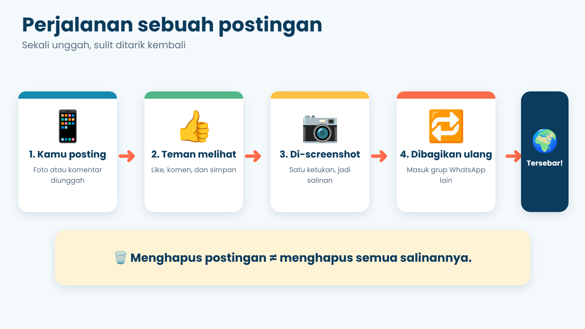
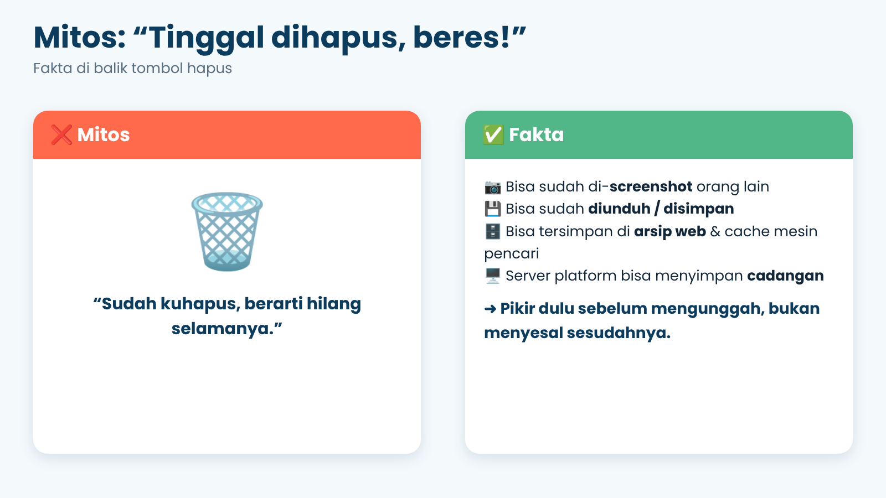
6. Kenapa Jejak Digital Harus Dijaga?
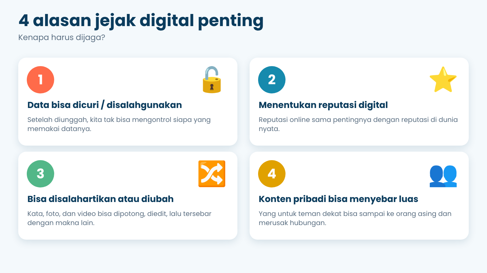
- Data bisa dicuri atau disalahgunakan. Setelah diunggah, kamu tidak bisa mengontrol siapa yang memakainya.
- Menentukan reputasi digital. Reputasi di dunia maya sama pentingnya dengan di dunia nyata.
- Bisa disalahartikan atau diubah. Kata, foto, dan video bisa dipotong atau diedit lalu tersebar dengan makna lain.
- Konten pribadi bisa menyebar luas. Yang tadinya untuk teman dekat bisa sampai ke orang asing.
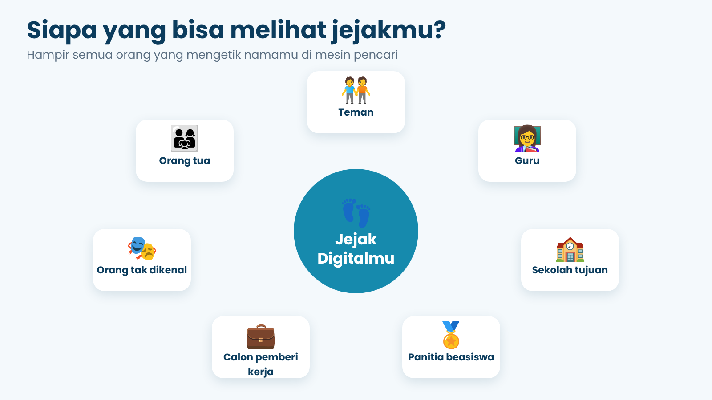
7. Jejak Positif vs Jejak Negatif
Jejak digital itu seperti pisau: bisa berguna, bisa juga melukai. Semua tergantung apa yang kamu tinggalkan.
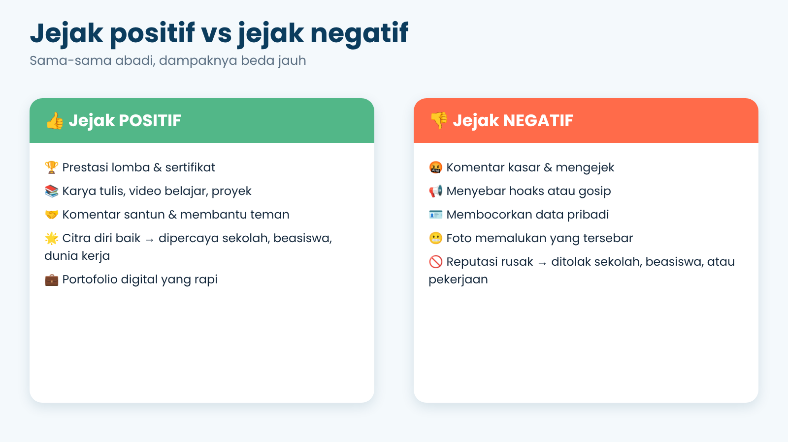
8. Awas Oversharing!
Oversharing artinya membagikan terlalu banyak informasi. Satu foto biasa bisa membocorkan nama lengkap, sekolah, tanggal lahir, lokasi, bahkan jam pulangmu.
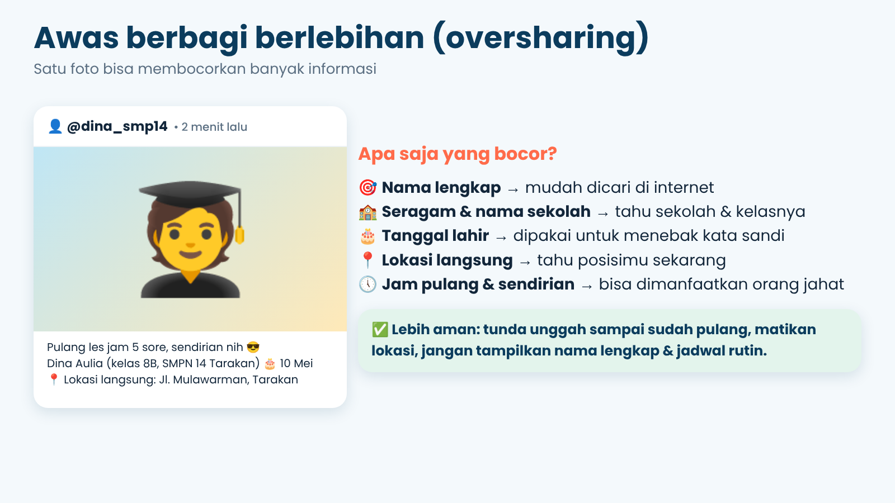
9. Cara Menjaga Jejak Digitalmu
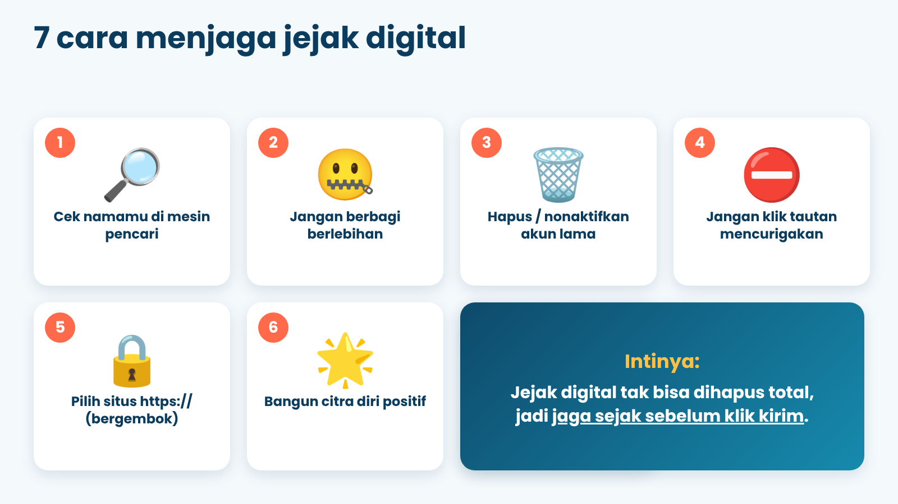
- Cek namamu di mesin pencari. Lihat juga tab Gambar dan Video.
- Jangan berbagi berlebihan. Pikir dua kali sebelum membagikan informasi pribadi.
- Hapus atau nonaktifkan akun lama yang jarang dipakai.
- Jangan klik tautan mencurigakan (hadiah gratis, undian, pesan berantai).
- Pilih situs aman: alamat berawalan https:// dan ada gembok.
- Bangun citra diri positif. Pakai internet untuk belajar dan berkarya.
- Bijak sebelum menulis konten yang akan disebarkan.
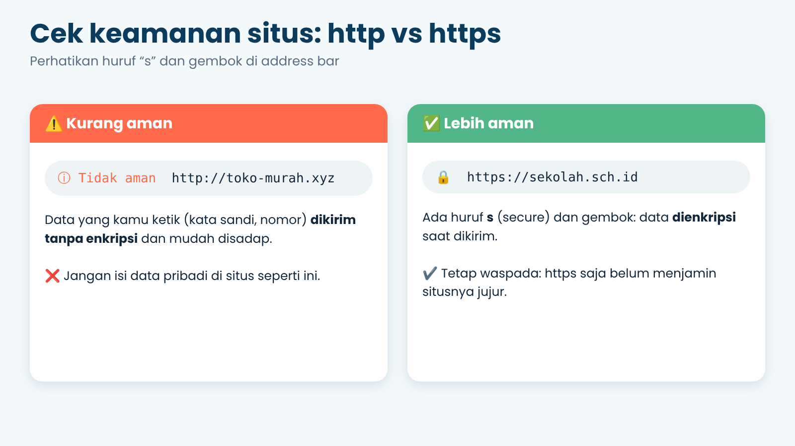
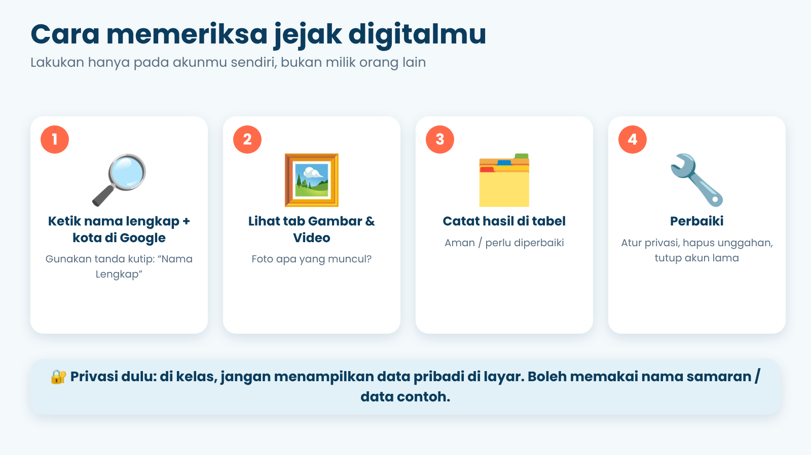
Periksa jejak digital milikmu sendiri. Jangan mencari-cari atau menyebarkan data pribadi temanmu, ya.
10. Tes 5 Pertanyaan Sebelum Klik KIRIM
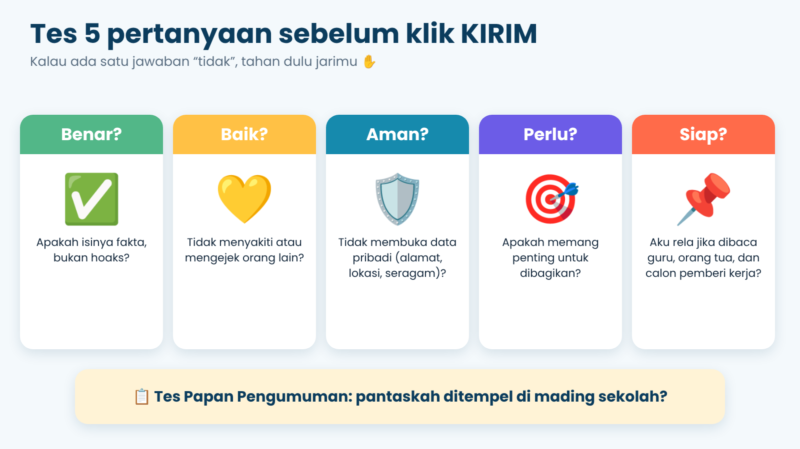
11. Rangkuman
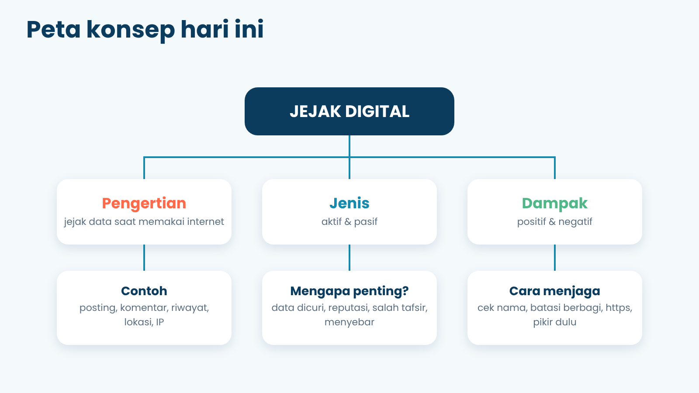
- Jejak digital = jejak data yang tertinggal saat kita memakai internet.
- Jenisnya: aktif (sengaja) dan pasif (tanpa sadar).
- Dampaknya bisa positif atau negatif, dan sulit dihapus total.
- Dijaga agar data aman, reputasi baik, tidak salah tafsir, dan tidak menyebar.
- Caranya: cek nama, batasi berbagi, pilih situs aman, pikir dulu sebelum kirim.
12. Kuis 10 Soal
Pilih jawabanmu, lalu klik Periksa.